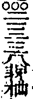

即非禪師全錄卷之五
舉古
舉世尊初生乃一手指天一手指地周行七步目顧四方云天上天下惟吾獨尊雲門云我當時若見一棒打殺與狗子喫貴圖天下太平。
師云世尊出世攪動乾坤雲門行棒無活人劍我當時若見亦不用如之若何但進云未出孃胎略較些子突出頭來堪作何用縱鐵鑄面皮也須裂下還知山僧為人處麼撥轉無為化追回太古風。
師云世尊要豎葛藤椿不合隨人起倒迦葉欲直截根苗那知早生枝葉惹得後代兒孫牽枝引蔓山僧恁麼道亦是郎當不少喝一喝。
舉世尊云吾有正法眼藏涅槃玅心付囑摩訶迦葉廣令傳授天如云今日不肖兒孫要問黃面老子者兩件物從那裏得來。
舉世尊在靈山會上說法有五百比丘得四禪定具五神通未得法忍以宿命通各各自見過去世時弒父害母及諸重罪於自心內各各懷疑於甚深法不能證入是時文殊知眾疑怖承佛神力遂手握利劍持逼如來世尊乃謂文殊曰住住不應作逆勿得害吾吾必被害為善被害文殊師利爾從本已來無有我人但以內心見有我人內心起時我必被害即名為害於是五百比丘自悟本心如夢如幻於夢幻中無有我人乃至能生所生父母於是五百比丘同聲說偈讚文殊曰文殊大智士深達法源底自手握利劍持逼如來身如劍佛亦爾一相無有二無相無所生是中云何弒。
師云文殊握金剛王寶劍欲剖如來心胸何異空中釘橛五百比丘悟得無有我人也是夢裏渡河。
舉世尊因廣額旃陀羅日殺千羊一日至佛所颺下屠刀云我是千佛一數世尊云如是如是。
師云世尊大開爐[革*(苟-口+用)]鎔屠刀為彈子換卻旃陀羅眼睛若逢乞眼人未審全肯放下否。
舉世尊往忉利天為聖母說法優填王思佛命匠人雕栴檀像及至世尊下來像亦出迎。
師云水底金烏天上日眼中瞳子面前人。
舉世尊般涅槃已迦葉後至槨示雙趺後來無準範示眾云大眾靈山百萬惟迦葉獨紹祖位誠不忝矣何故為他親見黃面老子腳跟來。
師云無準老漢也是扶強抑弱覿面欺人若論瞿曇腳跟阿誰不見殊不知飲光曾摸著瞿曇腳跟來大眾還曾摸著也未如未且向自己腳跟摸摸看縱摸不著也摸著自己腳跟。
舉城東老姥與佛同生不欲見佛每見佛來即便回避雖然如是回顧東西總皆是佛遂以手掩面於十指中亦總是佛。
師云將謂老婆眼光灼破四天下元來病眼見空花以手掩面重加一重翳膜若能回光返照豈不丈夫。
舉維摩詰居士令諸大菩薩各說不二法門時三十二菩薩皆以二見有為無為真諦俗諦合為一見為不二法門然後問文殊殊云如我意者於一切法無言無說無示無識離諸問答是為入不二法門殊復謂維摩曰我等各自說已仁者當說何等是菩薩入不二法門維摩默然。
師云維摩病多諳藥性徹底老婆心末後被文殊翻轉藥頭直得佛病祖病眾生病一時掃蹤滅跡。
舉達磨大師因梁武帝問如何是聖諦第一義磨云廓然無聖帝云對朕者誰摩不識。
師云梁帝逢而不逢初祖識而不識子細觀來兩兩無面目漢會得廓然聖惟我獨尊。
舉布袋和尚以破布一塊裹乾菌橛逢人則拈起云兜率陀天底兜率陀天底瑯琊云慈氏菩薩徑山云牢收取。
師云瑯琊鏤糞作栴檀徑山囊業作香袋擬欲並芳兜率誰知遺臭娑婆是山僧見他拈起攫來驀口擲管取嗽口三生免致彼此向菌橛裏作活計。
舉馬祖大師因洪州廉使問云弟子喫酒肉的是不喫的是祖云喫的是中丞祿不喫是中丞福廉使歡喜禮謝而退。
師云馬大師玉解連環則不無要且未會斬釘截鐵致彼廉使半吞半吐或問山僧喫的是不喫的是向他道拗轉舌頭看他向何處啗啄。
舉大珠和尚因法明問阿彌陀佛有父母及姓否珠曰阿彌陀佛姓憍尸迦父名月上母名殊勝玅顏明曰出何教大珠曰出鼓音王經法明禮謝讚歎而退。
師云法明所問的是序分大珠所答的是流通分且道正宗分在甚麼處依經解義三世佛冤離經一字如同魔說。
舉徑山國一禪師因官人問云傳舍有二使郵吏為刲一羊二使聞之一人救一人不救罪福異之乎國一曰救者慈悲不救者解脫。
舉長沙和尚因僧問作麼生轉得山河大地歸自己去沙云作麼生轉得自己歸山河大地去。
師云收來放去萬古如今不惜眉毛平分八字作麼生轉得山河大地歸自己去千峰勢倒岳邊止作麼生轉得自己歸山河大地去一葉落兮天下秋。
舉南泉因陸亙大夫問云弟子家中有片石亦曾坐亦曾臥如今擬鐫作佛還得否泉云得亙云莫不得否泉云不得。
舉趙州因一秀才問云佛不違眾生願然否州曰然才云弟子要乞和尚手中拄杖子州云君子不奪人所好才云某甲非君子州曰老僧亦不是佛。
師云臨機應變各各有計謀之策各各有隱身之術至于收放自如須讓趙州獨步。
舉溈山示眾云老僧百年後向山下作頭水牯牛左脅書五字曰溈山僧某甲此時喚作溈山僧又是水牯牛喚作水牯牛又是溈山僧喚作甚麼即得。
師云溈山計窮力極擬向異類中躲跟猶未是好漢當時若遇山僧直于面前作此[※-((鬯-匕)-凶)+○]相云吽吽管教一不成兩不是。
舉臨濟上堂云有一人論劫在途中不離家舍有一人離家舍不在途中那個合受人天供養便下座。
師云知賢養賢鳥可不重只為天寒日短兩人共一碗喫了各與艸鞋一雙。
舉曹山因僧問學人抱璞投師請師雕琢山曰不雕琢僧曰為甚不雕琢山曰須知曹山好手。
舉仰山夢往彌勒內院居第二座有一尊者白椎云今當第二座說法仰起白椎云摩訶衍法離四句絕百非諦聽諦聽一眾散去次日舉似溈山山云子不久入聖位。
師云仰山登夢位說夢法槌醒夢中微塵數聖眾可謂不虛小釋迦之名雖然落二落三了也若向一尊者舉槌時便醒即佛祖不能識誰敢強安名。
舉仰山一日見梵僧來參山於地上畫半月相示之僧近前添作圓相以腳抹卻山展兩手僧拂袖騰空而去。
師云人間月半天上月圓仰山早已勘破梵僧矣而梵僧欲與仰山月落後相見不貪香餌味真是碧潭龍。
舉大隨因僧問劫火洞然大千俱壞未審者個壞不壞隨曰壞僧曰恁麼則隨他去隨曰隨他去僧又問龍濟濟曰不壞僧曰為甚不壞濟曰為同大千。
師喚大眾壞與不壞即且置者箇畢竟是箇甚麼若也會得火燒不著水打不溼風吹不入其或未然急須照顧性命好。
舉雪峰因三聖問透網金鱗以何為食峰曰待汝出網來卻向汝遺聖云一千五百人善知識話頭也不識峰云老僧住持事繁。
師云破網金鱗不解取氣悶殺人待問以何為食便與本分草料豈不彼此慶快可惜淹他齏甕裏徒留話柄落人間。
舉玄沙因光上座曰師叔若學得禪某甲打鐵船下海去沙出世後令人問光打鐵船也未。
師云玄沙滴水也無能鼓滔天之浪光公大海出沒卻向陸地行舟檢點將來各與痛棒何也一人先行不到一人末後太過。
舉玄沙到莆田眾以百戲迎之次日問小塘長老許多喧鬧向甚處去小塘提起袈裟角示之沙云料掉沒交涉。
舉雲門因僧問如何是直截一路門云主山後僧云謝師指示門云合取皮袋無準云雲門大師是則是直截未免翻成迂曲徑山則不然或問如何是直截一路案山前若言謝師指示向他道一任東行西行。
師云好直截一路被主山案山礙卻路頭令者僧至今轉動不得山僧路見不平為伊掇開去也遂拈拄杖下座一齊打散。
舉太原孚問鼓山云父母未生時鼻孔在甚麼處山云即今生也鼻孔在甚麼處孚不肯乃云你問我與你答山云父母未生時鼻孔在甚麼處孚乃搖扇而已。
師云我若作鼓山見孚搖扇但云是則也是只許你見得父母未生時半邊鼻孔要見完全更參三十年。
舉昔有道士在殿前背佛而坐殿主云道流莫背佛好士云大德佛身充滿於法界教我向甚麼處坐。
師云看者黃冠卻有衲僧氣息只是貪前失後理上偏枯使我得見直拽向尿阬非惟知我法苑中有人要渠識取充滿佛身。
舉慈明和尚冬日牓示僧堂前作此相注曰若人識得不離四威儀中首座見謂眾曰和尚今日放參。
師云璞玉無瑕雕文喪德慈明老人未免傷鋒犯手首座雖善琢磨豈知刁刀相似魚魯參差喝一喝。
舉白雲端和尚謂五祖曰有一事老兄還知麼祖曰不知有什麼事端云近有數禪客自廬山來問他也有箇悟處教他說也說得頌也頌得批判也批判得只是未在五祖聞得七十七夜不成肚腸無準云白雲和尚用盡自己心笑破他人口乳峰這裏亦有一件事不得不說與諸人近日亦有數禪客自諸方來問他也無悟處教他說也說不得頌也頌不得批判也批判不得雖然如是乳峰許他是箇千了百當底人諸人聞得亦不用疑著何故南天台北五臺。
師云一人把住一人放行檢點將來一得一失山僧別資一路舉似大眾近日亦有數百禪客從六十六州來山僧也不問他悟也不教他說也不教他頌也不教他批判未跨門來一齊看破了也有人聞得讚歎不少且道與二大老相去幾何青山不鎖長飛勢滄海合知來處高。
舉五祖演問僧倩女離魂那個是真的僧罔答。
舉玉泉皓禪師因內翰東坡居士易微服往謁泉見便問尊官高姓坡云姓秤泉云是甚麼秤坡云是秤天下長老的秤泉震聲一喝云且道重多少坡無對。
師云東坡握權衡於掌內固其所長爭知鉤頭有準秤尾無星玉泉通身是一面古鏡明於鑑往知來不合上他直鉤幸東坡提持不起救得一半如何是那一半鉤在不疑之地。
舉宋太宗皇帝托起寶缽問丞相王隨曰既是大庾嶺頭提不起為甚在朕手裏隨無對。
師云宋帝不忘佛祖付囑掀翻鷲嶺家風丞相舌頭雖不拄天腳跟穩踏實地但轉身一路似欠所長當時聽上道了便對曰萬里山河歸有道豈不君臣際會道合古今。
舉昔有一菴主受婆子供養嘗令二八女子送飯給侍一日今女子抱定云正當恁麼時如何主曰枯木倚寒巖三冬無暖氣女子舉似婆婆曰我二十年只供養個俗漢遂遣出燒卻菴。
師云菴主種艸孤高惜乎氣味不辣致使者婆子露手露腳叢林中往往商量於女子抱定處劈面一掌或豎一指或下一喝或云少賣弄或云疑則別參或云脫下褲子如斯等見蒼天蒼天若是山僧待他抱住云正當恁麼時如何向他道扁舟已過洞庭湖不惟勘破婆子抑且具衲僧眼然雖如是諸人還識得燒菴出菴的落處麼驅耕手段重拈出枯木花開別是春。
拈古
舉世尊九十日在忉利天為母說法及辭天界下時四眾八部俱往空界迎有蓮花色比丘尼作念云我是尼身必居大僧後見佛不如用神力變作轉輪聖王千子圍繞最初見佛果滿其願世尊纔見乃呵云蓮花色比丘尼何得越大僧見吾汝雖見吾色身且不見吾法身須菩提巖中宴坐卻見吾法身。
拈云蓮花色比丘尼雖有先鋒且無殿後若有殿後敢保世尊眉毛涓合打失。
舉阿育王共一七歲沙彌至於屏處為沙彌作禮竟云慎莫與人說我禮拜汝沙彌見面前有一澡缾遂躍入復踊出語王曰慎勿與人說我躍入缾中復踊出王曰早箇說了。
拈云阿育王把無線底傀儡僻處拈弄好一場曲調大似蹉過知音小沙彌將缾子作浴盆潛身洗濯雖神用不易爭奈被王看破山僧當時若見腦後各與一椎何故明人不作暗事。
舉佛陀波利尊者遊臺山到忻州逢一老人問云向甚處去尊者答云臺山禮文殊去老人云大德見文殊還識不尊者無對。
拈云尊者大似捨邇求遠貴耳賤目當時見老人問了便與作禮管取慚惶無地。
舉誌公傳語思大云何不下山教化眾生目視雲漢作麼思大云三世諸佛被我一口吞卻更有甚麼眾生可化。
拈云一人在鬧市口舌頭拖地一人在孤峰頂眼光射天放過一著彼此作家簡點將來二俱不了據山僧所見者兩尊宿合當縛作一束送在大洋海底不為分外何故免致割截虛空惑亂人家男女。
舉南泉願禪師因普請次乃問維那作甚麼那云拽磨師云不得動著中心樹子那無對。
拈云堂頭相借問時樹子便動了爭怪得維那惜乎當時不解拈卻似為蹉過山僧今日與汝們撥轉通天一竅汝們還知麼。
舉曇藏和尚一夜在菴中經行值群盜至藏乃從容語盜曰茅舍有可意物一任將去終無所吝盜感其言稽首而散。
拈云赤眉元不打貧家。
舉曇藏和尚一日見有大蟒至菴身長數丈大張口牙毒氣熾然侍者請避藏云死可逃乎彼以毒來我以慈受毒無實性激發則強慈苟無緣冤親一揆言訖其蟒按首徐行倏然不見。
拈云曇藏觀身如幻觀惡如化侍者請避早被一口諸兄弟識此蟒麼龍得水時增意氣還識曇藏麼象當行處絕狐蹤。
舉黃檗運禪師在鹽官佛殿上禮拜次時大中帝為沙彌乃問不著佛求不著法求不著僧求長老禮拜當何所求師云不著佛求不著法求不著僧求常禮如是事彌云用禮何為師便與一掌彌云太麤生師云這裏是甚麼所在說麤說細隨後又掌。
拈云直下兩掌黃檗連根苦逆來順受甜瓜徹蒂甜若也會得兩掌自然坐享太平。
舉黃檗運禪師因斐相國捧一尊像於前胡跪云請師安名師喚云裴休休應諾師云與汝安名竟休作禮而退。
舉趙州問老婆甚處去曰偷趙州筍去師云忽遇趙州時作麼生婆便掌師休去。
舉趙州因僧問學人乍入叢林乞師指示師云喫粥也未僧云喫了師云洗缽盂去其僧因此契悟。
拈云趙州指示因風吹火者僧契悟灰裏豆爆諸人平旦展缽洗缽因甚不悟且道得失在什麼處未到盡驚山險峻曾來方識路高低。
舉德山和尚一日因飯遲自托缽至齋堂前遇雪峰云鐘未鳴鼓未響托缽向甚麼處去山便回方丈雪峰舉似巖頭頭云者老漢未會末後句在山聞得遂呼巖頭云汝不肯老僧麼巖頭密啟其意次日德山上堂果與尋常不同巖頭云且喜老漢會末後句。
拈云雪峰撥轉天關巖頭掀翻地軸二人雖竭忠盡孝只扶得德山末後句如何是末後句任從滄海變終不為君通。
舉德山垂示云我先祖見處即不然這裏無佛無祖達磨是老臊胡釋迦是乾菌橛文殊普賢是擔菌漢等覺玅覺是破執凡夫菩提涅槃是繫驢橛十二分教是鬼神簿拭瘡疣紙四果三賢初心十地是守古塚鬼自救不了。
拈云千鈞之弩不為鼷鼠發機所謂顯揚格外事須還過量人德山披肝瀝膽為上根人抽釘拔楔還有知恩解報者麼請出與山僧相見。
舉古者道護生須是殺殺盡始安居會得其中意鐵船水上浮圓悟云且道殺個甚麼殺眾生物命凡夫見解殺六賊煩惱座主見解殺佛殺祖大闡提人見解衲僧分上畢竟殺個甚麼試定當看。
拈云圓悟剖露全機未免自傷己命若論衲僧分上直得無下手處諸兄弟會麼道泰不傳天子令將軍塞外絕煙塵。
舉夾山因僧問承和尚有言二十年住此山未曾舉著宗門中事是不師曰是僧便掀倒禪床師便休去至明日普請掘一阬召僧至曰老僧二十年只說無義語便請上座打殺老僧埋向此中不然主座自著打殺埋向此中始得其僧歸堂束裝潛去。
拈云者僧展摧山手段天然迥別惜乎只得其大用未得其大機夾山設陷虎阬阱太殺尋常雖有入地之謀且無衝天之略若是山僧又且不然當時見這僧掀倒禪床即連棒趁出不惟有意氣時重添意氣抑且不風流處轉見風流。
舉洞山禪師因僧問寒暑到來如何迴避師云何不向無寒暑處迴避僧云如何是無寒暑處師云寒時寒殺闍黎熱時熱殺闍黎。
拈云冰不自寒火不自熱於此薦去勘破洞山其或未然便有寒暑促君壽鬼神妒君福。
舉仰山住東平時溈山附書并鏡一面至師陞座乃提鏡示眾云大眾且道是溈山鏡東平鏡若道是東平鏡又是溈山寄來若道是溈山鏡又在東平手裏道得則存取道不得則打破如是三舉眾皆無對師乃撲破。
舉長慶禪師云路逢道伴交肩過一生參學事畢。
拈云長慶將謂道伴多少奇特殊不知被渠隙過一生山僧則不然路逢道伴交肩過更買艸鞋行腳。
舉修山主示眾云具足凡夫法凡夫不知具足聖人法聖人不會聖人若會即是凡夫凡夫若知即同聖人此語具一理二義若人辨得不妨於佛法中有個入處若辨不得莫道不疑。
拈云修山主只管私通車馬誰知官不容鍼那時忽遇沒面目漢出來把斷要津不通凡聖修山主又作麼生。
神宴國師示眾云鼓山門下不得咳嗽時有僧便咳嗽一聲師云作麼僧云傷風師云傷風即得古德云雷聲浩大雨點全無。
拈云祖庭秋晚佛法下衰抱病者流填門塞戶者僧若不是鼓山以毒攻毒幾乎喪身失命諸兄弟還識鼓山麼解用不須霜利劍延齡何必九還丹。
舉石門聰禪師示眾云十五日已前諸佛生汝不得離我這裏汝若離我這裏我有鉤子鉤汝十五日已後諸佛滅汝不得住我這裏汝若住我這裏我有錐子錐汝正當十五日且道用鉤即是用錐即是。
拈云鉤來錐去本分鉗鎚把住放行作家手眼石門雖把柄在手要且勞而無功若有點檢得出許伊是一員無事道人。
舉慧弼禪師因僧問如何是毘盧印弼曰艸鞋踏雪僧曰學人不會弼曰步步成蹤。
拈云全提祖印弼老固是作家子細觀來鈍置者僧不少或問山僧如何是毘盧印劈面一掌若曰學人不會向道印破闍黎鐵面門且道與古人相去多少。
舉昔有施主入院行眾僧隨年錢知事云聖僧前著一分施主云聖僧年多少知事不能答。
拈云知事筭聖僧八字不真所以施主不還命錢當時若道得與露柱同年管取百千萬億分供養非但一分已也。